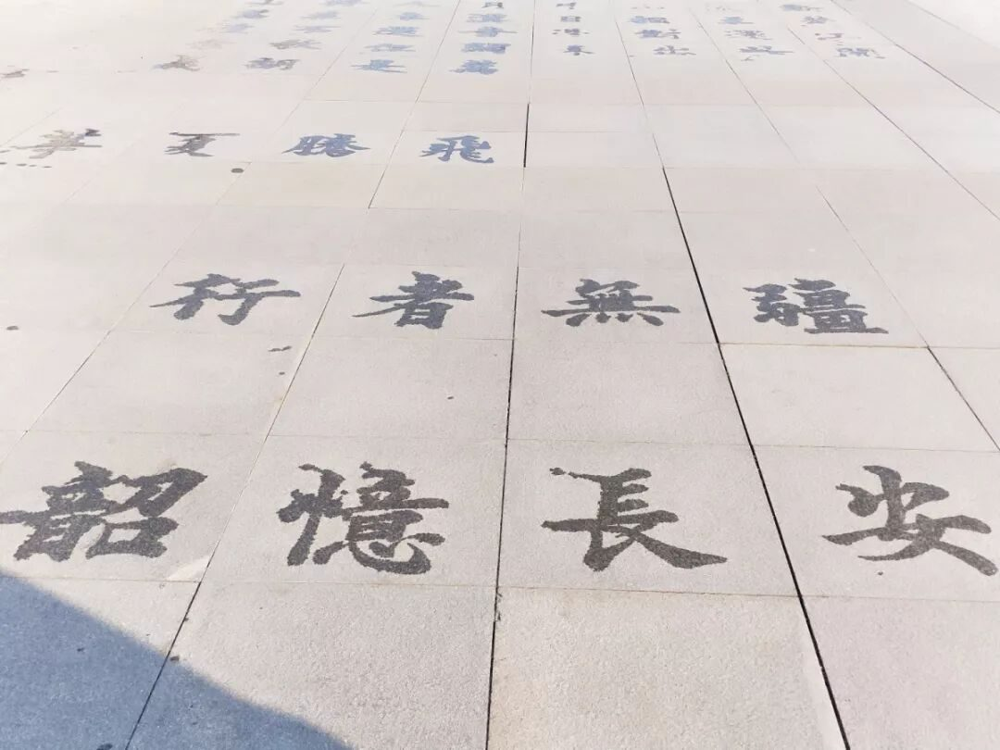
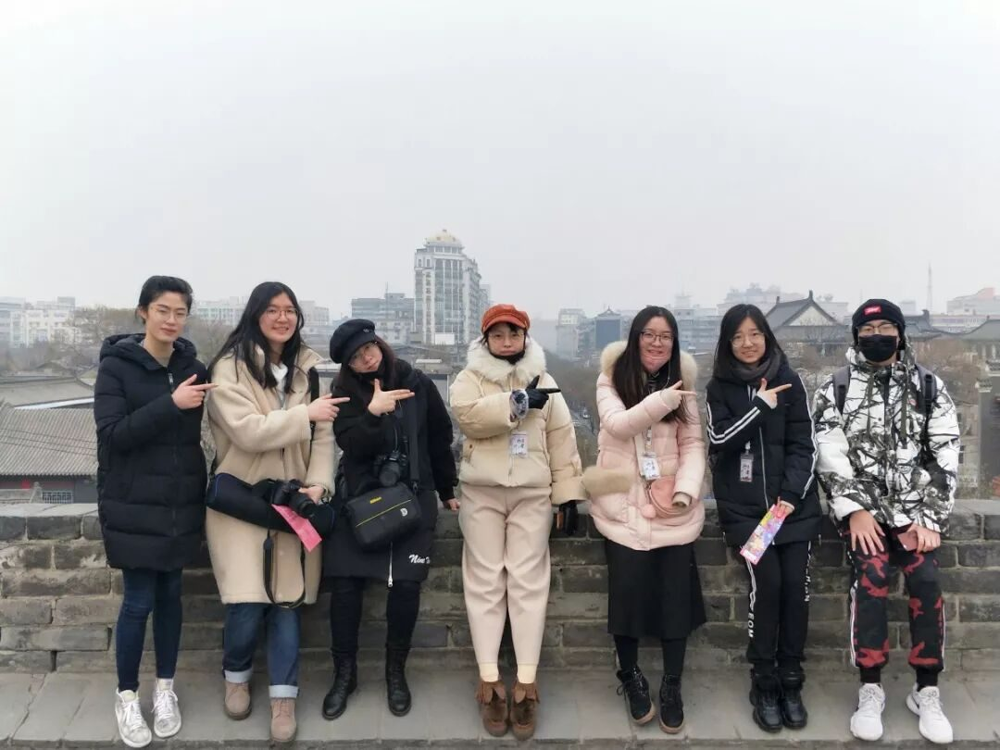
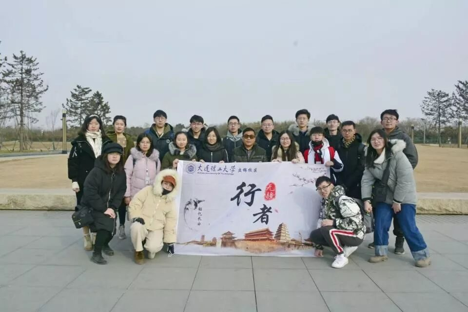
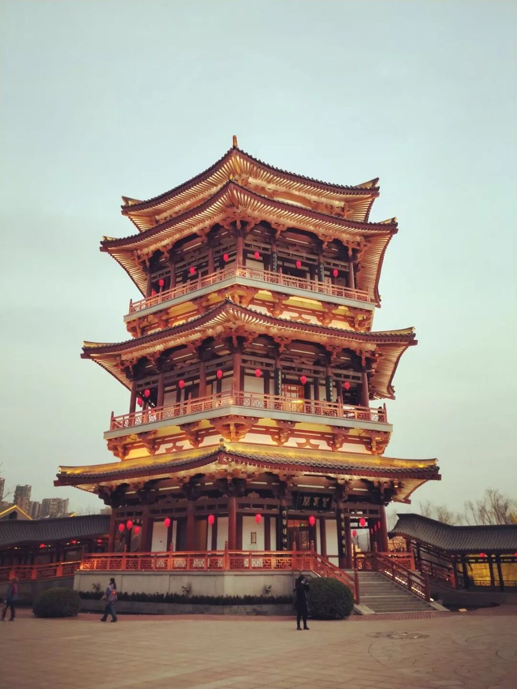
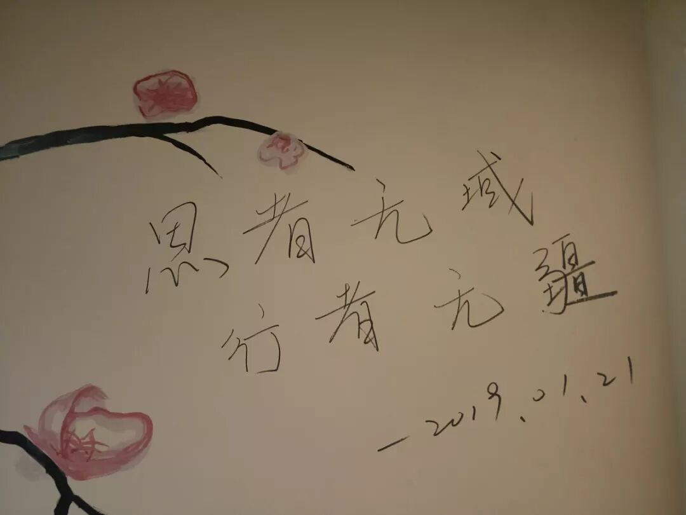

【秦简拓语 · 一】别来无恙，你在心上

记得去年这个时候，还是个懵懵懂懂的大一新生，跟随着学长学姐们的脚步来到一座陌生的城市。那是我第一次，在没有父母的陪同下与朋友们一起远行。而如今，我竟然有能力带领自己的团队，到异乡进行实践任务。

FOR THE TIME
寻觅时光
大学这一年，我学到了很多，收获了很多，也能渐渐地看到一些以前在中学时期感受不到的东西。很多人觉得做调研的社会实践会不靠谱，觉得只是游山玩水。但是“行者无疆”这个团队给我的感觉是不同的。这里的每一个人都为了团队的荣誉努力工作。我们分工明确，我们目标清晰，我们每个人都有自己独特的见解，我们，志同道合。

前期准备，从招募到面试，从团队的组建到实践主题的确定。这里，见证了我们每一位老队员为之付诸的心血，我们因志趣相投而结识，因热爱而选择留下。我们都希望“行者无疆”能传承下去，不为各类奖项，也不为任何荣誉，只为坚持最初组建团队时的那份初心与热忱。这是我所期待的团队，这是我爱的“行者无疆”。当我发现我的空间说说有一半被“行者无疆”这个关键词所占据，我知道，我回不去了。它已透过生活，进入了我的生命。

实践期间，虽说偶尔会有些工作上的摩擦，但大家的热情不变，想为文物保护做出贡献的决心不变。每个人在实地调研期间，走访的每一个遗址，都是带着自己独立的思考走下去的。每日行程结束的夜晚，我们会围坐在一起，分享这一天内各自的所见所闻，所观所感。我们一起讨论所发现的问题，并探讨为了保护遗址古迹，身为大学生的我们，能做些什么力所能及的事情。这样的相处模式，让我觉得，这个团队没错，同行的队员们也没错。
实践之前，在我的认知里，聊到西安，第一个浮现在大脑里的是兵马俑。然整场行程下来，令我印象最深的，却是阿房宫遗址。它不像兵马俑宏伟壮观，不比芙蓉华清婀娜多姿，传说阿房宫被项羽一把火烧光，所赋词句雍容华贵，而亲身走进深入了解才知，原阿房起初就根本没有被建成。我们眼前所见的，也只是一方厚土胚。以警醒后人，不可普张浪费，过度奢糜。

最后借用雯雯姐那番话：有人把生命局促于互窥互监、互猜互损之中，有人则把生命释放于大地长天、远山沧海之间。所谓行者，可将每一片土地都置于脚下，为后来人度步出一往无垠的疆土。

因为有这样一群人，
我们得以借他们的眼，凭他们的手，
去注视这浩瀚文渊，去触摸这俊美河山。
苦旅终有尽，行者情不改；
如今再聚首，续写新的篇章。
关于行者无疆的未来，你们就是最好的答案！
一期一会，不负相见。
感谢与你同行，
是你们让行者的文化苦旅不再孤单。

来源丨行者无疆实践团
文字丨徐菁聪
排版丨牛直达
审核丨潘雯雯 邓子孚
行者无疆实践团
QQ：2758025831
随行者一起认识世界
长按二维码关注